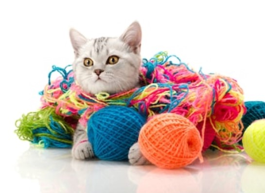
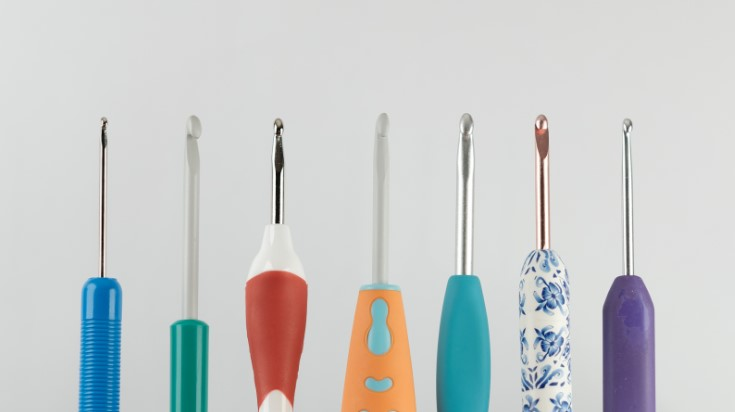

Knitting and crocheting articles
A beginner’s guide to crocheting - best tips and tricks
The year is 2020. The world has stopped, there’s a pandemic and currently you can’t go anywhere. Now you have to spend weeks in quarantine without going out and seeing your friends for a while. Out of boredom, you decide to try something new and try crocheting. But you wonder where to start...Don’t worry, we got you!
1.First things first: remove obstacles
Before you even start crocheting, you would first like to remove things that would stand in your way and possibly ruin your craft. For example, could be your long hair that might get tangled in your work. Or your rings/bracelets that can catch on the yarn. Remember to keep your animals (cats, dogs and such) away from you while you crochet as well - they might see your ball of yarn as a toy!

2. Crochet hooks
There are different types and sizes for different projects. The most common types include steel (for the smallest sizes and are often used in fine thread crochet such as in doilies), aluminium (allowing you to crochet smoothly and quickly), plastic & bamboo (lightweight and available in a lot of sizes) and tunisian (longer than regular hooks, sometimes with a hook and each end).
When it comes to choosing the best size, you would see a suggested hook size on the yarn label and an estimated number of stitches per inch (or 4 inches). Mind that the suggested hook size on the label is just a suggested starting point and if your work is too tight, you should choose a larger crochet hook or if too loose - smaller. Remember to switch hooks only when necessary and avoid doing so in the middle of a project.
3. Ergonomic hooks
When talking about hooks, these ones deserve a special shout-out. They are designed to be comfortable and if you find hooks that you like, it would make crocheting more enjoyable. They have larger soft handles or handles you can insert a regular hook into and are designed to reduce the stress and tension in your hands when you’re crocheting for a longer time.

4. Mistakes are just happy accidents
...so don’t be afraid to make mistakes! For example, if you made a mistake a few rows back, there’s nothing wrong with ripping out the stitches up to that point and trying again. Also, don’t be afraid to experiment. Try using different colors of yarn when crocheting, add or remove details, add stripes or vary the stitches. After all, it is your creation!
5. Join a community
Bonding over a shared hobby creates longtime friendships. And what’s better than making friends with people who are as creative as you! Crocheting brings people closer and can even strengthen bonds between family members of different generations. Also, you can always learn something new from other people, even if you’re a novel crocheter by now.
Place makers in patterns
As you got more experience now, you already learned how to do some stitches and read patterns. Although it is easy for you now to understand patterns, there’s this strange abbreviation that you don’t know what it means - PM. PM stands for “place maker” and is shortened version of the instruction “place stitch marker here”.
You see PM, what now? When you see PM inside of a crochet pattern, that signifies a place where you are now going to place a stitch marker. Crochet patterns would usually specify where there is a PM, but if it doesn't say, then you should place the stitch marker in the last stitch that you made before reading this instruction in the pattern. Usage of PM There are different occasions on which PM is used. The most common ones are when crocheting in the round (The stitch marker is used to mark the beginning of each round so that you can easily see where you are supposed to join the round), when working with certain types of yarn, across long rows or with pattern repeats. Following the instruction You might wonder why it is necessary to follow the pattern exactly as it it. The person who designed the PM has worked many times with it before and knows where it's needed to place the marker in order to get the pattern correctly. That being said, it is usually smart to follow the instruction, especially if you’re a beginner.
Long Sleeves for Summer? Yes!
Wait, long sleeves? These are summer sleeves, open and airy, made with a gorgeous lace pattern. This pullover has a repeating lace motif on the upper front and back as well, which continues down the sleeves.

How I started crocheting
It all started during the Covid-19 pandemic. I was stuck at home with nothing to do. During cleanig I found basket full of yarn and it reminded me of a tutorial on how to make winnie the pooh which was my favorite childhood story.